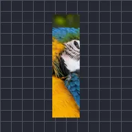

بینڈ

لیئر کو گول قوس میں موڑتا ہے؛ اوریجن والا رخ جگہ پر رہتا ہے اور دور والا رخ آپ کے سیٹ کردہ اینگل کی طرف مڑتا ہے، مثبت اینگل بائیں طرف۔ لمبی اور پتلی لیئرز پر بہترین۔
سیٹنگز
| سیٹنگ | قسم | رینج | ڈیفالٹ |
|---|---|---|---|
| اوریجن | انتخاب | بائیں, دائیں, اوپر, نیچے | نیچے |
| اینگل | زاویہ | -180° سے 180° تک | 0° |
| اسٹارٹ | نمبر | 0% سے 100% تک | 0% |
| اسٹارٹ سے پہلے | انتخاب | فریز, اسی طرف بینڈ, مخالف طرف بینڈ | فریز |
| ہیڈ ٹیون | نمبر | 0% سے 100% تک | 75% |
| ٹیل ٹیون | نمبر | 0% سے 100% تک | 25% |